상담 절차
심리검사 절차
-
STEP 1. 전화문의 및 예약
-
STEP 2. 방문 접수 면접및 상담 계약
-
STEP 3. 상담
-
STEP 4. 종결
심리검사는 방문접수 면접 및 상담 계약 (STEP2) 후 상담 (STEP3) 하기 전 혹은 상담 중에
상담의 주제와 내용에 따라 필요한 경우 상호 동의 하에 실시합니다.
- 모든 상담은 예약제로 실시됩니다. 상담을 원하시는 분은 전화로 예약해 주세요. 전화 업무 : 월-금 오전 9시~저녁 6시 / 031-713-1150
- 회기 당 상담 시간은 60분 입니다 (첫 회기는 약 90분이 소요됩니다).
- 총 상담 회기는 첫 번째 회기에서 현재의 어려움에 대해 논의한 후 상담 주제 및 목표에 따라 협의 하에 함께 결정할 수 있습니다.